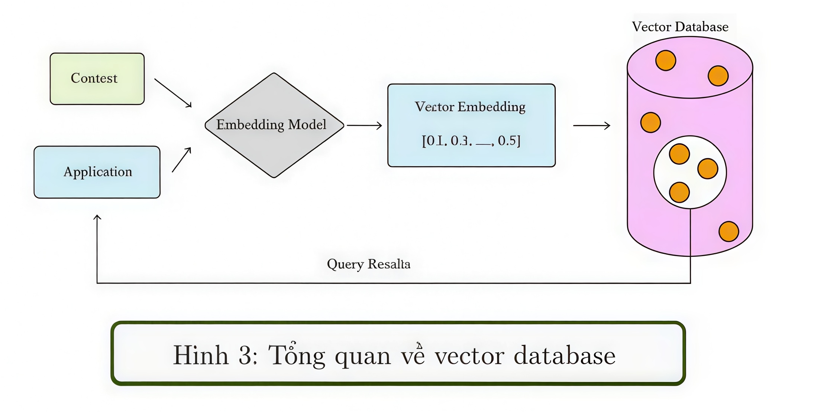

Khái niệm
Vector Database hay còn gọi là vector store, vector search engine là một loại cơ sở dữ liệu được thiết kế chuyên biệt để lưu trữ, chỉ mục và truy vấn các vector embeddings là biểu diễn số của dữ liệu phức tạp như hình ảnh, văn bản, âm thanh, sensor data.
Trong khi các cơ sở dữ liệu truyền thống quản lý dữ liệu dưới dạng scalar như số, chuỗi, ngày tháng, thì Vector Database xử lý tốt dữ liệu đa chiều, từ hàng trăm đến hàng chục nghìn chiều do các embedding tạo ra. Các vector này chứa đặc trưng ngữ nghĩa quan trọng để phục vụ cho các ứng dụng AI như similarity search, semantic retrieval và retrieval-augmented generation.
Tổng quan quy trình

Hãy cùng phân tích quy trình trên:
- Đầu tiên, chúng ta sử dụng mô hình nhúng để tạo các vector nhúng cho nội dung cần lập chỉ mục.
- Vector embedding được chèn vào Vector Database cùng với một số tham chiếu đến nội dung gốc của vector đó.
- Khi ứng dụng đưa ra truy vấn, chúng ta dùng cùng Embedding Model để tạo vector embedding cho truy vấn.
- Từ vector truy vấn này, hệ thống tìm các vector embedding tương đồng trong Vector Database.
- Sau đó từ các vector tương đồng, hệ thống tham chiếu ngược lại nội dung gốc để trả kết quả cho người dùng.
Embedding
Embedding là quá trình chuyển đổi dữ liệu thô như văn bản, hình ảnh, âm thanh hoặc video thành một vector số nhiều chiều, trong đó mỗi chiều đại diện cho một đặc trưng ngữ nghĩa hoặc hình thái của dữ liệu.
Việc biểu diễn như vậy giúp các hệ thống AI và Vector Database có thể tính toán độ tương đồng giữa các đối tượng mà không cần hiểu trực tiếp ngôn ngữ tự nhiên, hình ảnh thô hay âm thanh.
Vì sao cần embedding?
- Dữ liệu như văn bản, hình ảnh vốn ở dạng rời rạc, không thể so sánh trực tiếp.
- Embedding giúp đưa dữ liệu về cùng một không gian vector, nơi mọi dữ liệu đều trở thành một điểm trong không gian đó.
- Nhờ đó, việc tìm kiếm tương tự, phân cụm hay recommendation đều chỉ cần đo khoảng cách giữa các vector.
Indexing trong Vector Database
Sau khi dữ liệu đã được chuyển đổi thành vector embedding, bước tiếp theo trong Vector Database là indexing, tức xây dựng chỉ mục giúp tối ưu khả năng truy vấn tìm kiếm gần đúng Approximate Nearest Neighbor - ANN với tốc độ nhanh và chi phí hợp lý ngay cả trên dữ liệu lớn.
Vì sao cần indexing?
- Với hàng triệu đến hàng tỷ vector, việc so sánh trực tiếp brute-force search là phi thực tế do chi phí tính toán quá lớn.
- Index giúp tổ chức các vector thông minh để chỉ cần tìm kiếm trong một phần nhỏ không gian vector nhưng vẫn giữ độ chính xác cao.
Trong phạm vi bài này, chúng ta sẽ tìm hiểu ba cách indexing dữ liệu từ cơ bản đến nâng cao: Flat Index, IVF.
Flat Index
Flat Index là một tên gọi khác của tìm kiếm brute-force. Tất cả các vector được lưu trong một cấu trúc chỉ mục duy nhất mà không có bất kỳ tổ chức phân cấp nào.
Cách tiếp cận này khá giống với KNN: hệ thống sẽ so sánh vector truy vấn với toàn bộ các vector đã lưu bằng một độ đo khoảng cách như L2, Cosine hoặc Dot Product, sau đó trả về k kết quả gần nhất.
Query Vector → so sánh với toàn bộ dataset → Results (k)
Đặc điểm của phương pháp này:
- Chính xác tuyệt đối vì so sánh toàn bộ vector dataset.
- Không cần build index phức tạp.
- Chi phí tính toán cao nếu dataset lớn, đặc biệt từ hàng triệu vector trở lên.
Chúng ta thường dùng Flat Index khi dataset nhỏ đến trung bình, khoảng vài nghìn đến vài trăm nghìn vector, hoặc khi cần đảm bảo độ chính xác tuyệt đối và không quá hạn chế tài nguyên.
Inverted File Index - IVF
IVF là một trong những kỹ thuật lập chỉ mục đơn giản và trực quan nhất. Dù thường được dùng trong các hệ thống truy xuất văn bản, IVF cũng có thể điều chỉnh cho cơ sở dữ liệu vector để tìm kiếm xấp xỉ lân cận gần nhất.
IVF hoạt động như sau:
- Sử dụng các thuật toán phân cụm để chia toàn bộ vector trong dataset thành nhiều cluster khác nhau.
- Mỗi cluster có một trọng tâm centroid tương ứng, và mỗi vector được gán vào cluster có centroid gần nhất.
- Khi truy vấn, thay vì so sánh với toàn bộ dataset, hệ thống chỉ cần tìm centroid gần nhất với vector truy vấn.
- Sau đó việc tìm kiếm gần nhất chỉ diễn ra trong cluster tương ứng hoặc một số cluster gần nhất.
Giả sử có N vector, mỗi vector có D chiều, thì Flat Index có độ phức tạp gần mức O(ND). Với IVF, nếu có k centroid, hệ thống chỉ cần xét centroid gần nhất trước rồi tìm trong vùng dữ liệu nhỏ hơn, nhờ đó giảm đáng kể chi phí truy vấn thực tế.
Dataset → Clustering → Centroids → Query chỉ tìm trong cluster liên quan
Kết luận
Vector Database là thành phần quan trọng trong các hệ thống AI hiện đại khi dữ liệu cần được biểu diễn dưới dạng embedding và truy vấn theo mức độ tương đồng. Giá trị cốt lõi của nó không chỉ nằm ở việc lưu vector, mà còn ở khả năng indexing và tìm kiếm gần đúng hiệu quả trên tập dữ liệu rất lớn.